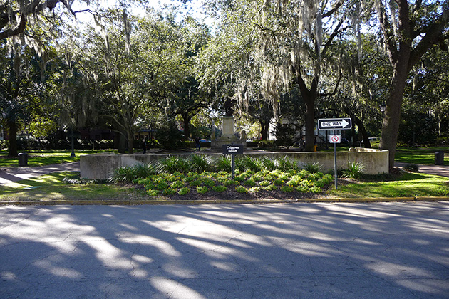
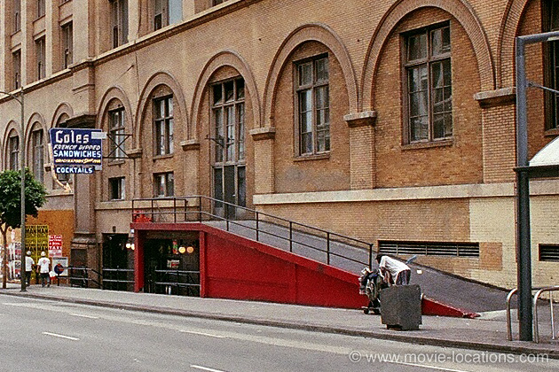
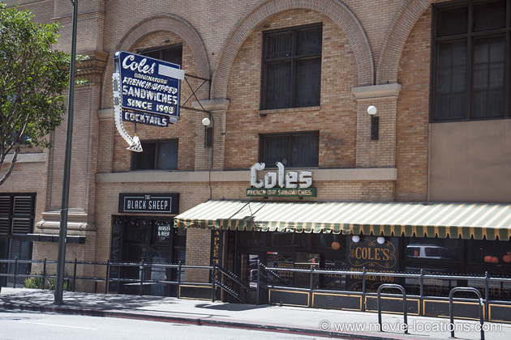
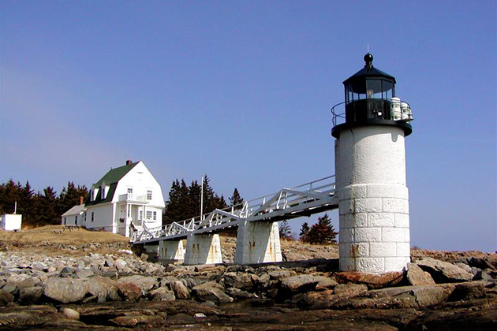
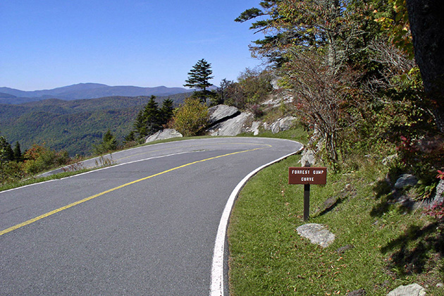

Forrest Gump
Main Content

Discover where Forrest Gump (1994) was filmed around the USA, in South Carolina, North Carolina, Georgia, Washington DC, Los Angeles, Arizona, Maine and Montana.
Audiences were split down the middle on this one – a moving affirmation of simple values or a reactionary celebration of slow-witted sentimentality? Box office went with the former, and so did the Academy, handing out for the second time a Best Actor award to Tom Hanks.
Most of the film’s locations were found in a small area of South Carolina around Beaufort.
The bench, though, on which Gump collars anyone who’ll listen, stood on the north side of Chippewa Square, Savannah, Georgia – but only for the film. If you really want to sit and ponder exactly how much like a box of chocolates life is, you’ll find the seats are within the garden square itself; and you’ll also notice that the direction of traffic around the square was reversed (to allow the buses to pull in to the centre of the square).
The actual bench now resides in the Savannah History Museum, 303 Martin Luther King, Jr. Boulevard, Savannah.
The fictitious town of ‘Greenbow, Alabama’, where the young Gump grows up, is Varnville, on Route 68 about 35 miles northwest of Beaufort. Many of the main street shops dressed for the movie have elected to retain the Gump look. Gump’s school, where the Principal uses a helpful diagram to explain Forrest’s intelligence to his mum (Sally Field), was Hampton Street Elementary School, now the Colleton Center, 494 Hampton Street, Walterboro, north of Beaufort.
The Gump boarding house and Jenny’s (Robin Wright Penn) farmhouse stood on the Bluff Plantation, Twickenham Road, just southeast of Yemassee, on the Combahee River between Varnville and Beaufort. Built only for the movie, they were torn down after filming.
Gump’s running prowess gets him into the ‘University of Alabama’, though the university scenes are in California. The football stadium is the Weingart Stadium of East Los Angeles College, 1301 Avenida Cesar Chavez – packed out with CGI crowds. The stadium went on to host the Metropolis-Gotham City football match in Batman V Superman.
Jenny’s ‘Margaret Mitchell Hall’, outside which Gump punches the lights out of her male friend, is Marks Hall, 612 West 35th Place, on the campus of the University of Southern California, in the Exposition Park district south of downtown Los Angeles. It’s in front of the same university’s Bovard Administration Building that Gump graduates before being recruited into the army.
And don’t be fooled by those CGI mountains, either – the ‘Vietnam’ scenes, where Gump first meets both Bubba (Mykelti Williamson) and Lieutenant Dan (Gary Sinise), were filmed on Fripp Island and Hunting Island State Park, off the Beaufort coast of South Carolina.

It’s back to Los Angeles for the ‘Saigon’ hospital in which Gump recuperates alongside the embittered Lt Dan, which was the Ebell of Los Angeles, 4400 West Eighth Street at Lucerne Boulevard, midtown. This complex, comprised of a women’s club and the Wilshire Ebell Theatre, can be seen in scads of films, including The Addams Family, Air Force One, Catch Me If You Can, Old School, Cruel Intentions, Darkman, Death Becomes Her, The General’s Daughter, Ghost, Very Bad Things and The Wedding Planner. Coincidentally, it even turns up again as a hospital in another offbeat SFX fantasy adapted by Eric Roth, The Curious Case of Benjamin Button.
Gump addresses the crowd at the Lincoln Memorial in Washington DC, with the Washington Monument in the distance, before wading into the Reflecting Pool to be reunited with Jenny. After the demo, Gump hands over his Congressional Medal of Honor to Jenny on Maine Avenue SW, in front of the Jefferson Memorial in East Potomac Park.

After the Dick Cavett chat show appearance, which seems to inspire John Lennon to write Imagine, Gump meets up again with wheelchair-bound Lt Dan. The TV studio exterior is the ramp outside Cole’s Restaurant at 610 South Main Street – the stretch of road used for the attack on the police convoy in S.W.A.T.

It’s inside Cole’s Restaurant, in the Pacific Electric Building, 610 South Main Street, that Gump and Lt Dan raucously celebrate New Year 1972. A much-used location, the building has also hosted filming for L.A. Confidential, Se7en and Face/Off ).
It’s briefly back to Washington DC to meet Richard Nixon, where Gump stays at the Watergate Hotel, 2650 Virginia Avenue NW, and reports mysterious men with torches in the building opposite (see All the President’s Men for more details of this odd event).
After his discharge from the army, Gump visits Bubba’s ‘Louisiana’ home, not in ‘Bayou La Batre’, but on Alston Road, Lucy Point Creek, on Ladies Island just southeast of Beaufort. Nearby Port Royal (which claims to be the first settlement in the New World, predating Jamestown by some 45 years) was the site of the disastrous hurricane, which brings Gump such good fortune.
The ‘Four Square Baptist Church’, where Gump prays with the choir for shrimp, is Stoney Creek Chapel, McPhersonville, Hampton County. In Beaufort itself, the University of South Carolina’s Beaufort Performing Arts Center, 801 Carteret Street, became the ‘Bayou La Batre Hospital’, which gets transformed into the ‘Gump Medical Center’ with the shrimping profits.

Gump takes a little run, first through downtown Varnville. The tiny bridge with the ‘Mississippi Welcomes You’ sign is Chowan Creek (or Cowan Creek) Bridge linking Ladies Island and St. Helena Island, east of downtown Beaufort.
Gump runs “clear to the ocean”, to Santa Monica Yacht Harbor on the west coast, then to “another ocean” – at the Marshall Point Lighthouse, near Point Clyde, Maine, on the east coast.
In the blink of an eye he's jogging through golden wheatfields at Cut Bank, Montana. The picturesque stone bridge set against a background of snowy peaks is at the St. Mary Entrance to Glacier National Park, north of Kalispell, also in Montana. Going-to-the-Sun Road, the 52-mile scenic road which crosses the park from St. Mary on the east side to Apgar Village on the west (built in the Thirties and named after Going-To-The-Sun Mountain) can be seen in the opening shots of Stanley Kubrick’s The Shining.
On the girdered swing bridge, the Woods Memorial Bridge where US21, Sea Island Parkway, crosses the Beaufort River east of downtown Beaufort, TV crews question Gump on his motivation for running.

As he rounds the hairpin bend on Grandfather Mountain near Linville, up near Asheville in North Carolina, he begins to realise he’s got company. The bend is now signposted as Forrest Gump Curve. The entrance to Grandfather Mountain (there’s an admission fee) is on US 221, about two miles north of Linville, and a mile south of the Blue Ridge Parkway, at milepost 305. And don’t miss the mountain’s Mile High Swinging Bridge.
Tramping through dog poo as he runs north from East Aspen Street along North San Francisco Street in downtown Flagstaff, Arizona, Gump inadvertently invents the ‘Shit Happens’ bumper sticker.
He gives rise to another cultural icon – the ‘Smiley Face’ t-shirt – as he jogs past the old Twin Arrows Trading Post, about 20 miles east of Flagstaff (you can see the two giant arrows which gave this old Route 66 stop its name to the left of the frame). When I-40 replaced Route 66, the trading post closed and the two arrows are now in a sad state of disrepair. Catch them while you can.
Three years, two months, fourteen days and sixteen hours after the start of his run, Gump decides, at Monument Valley in Arizona, to go home.
Visit Info
Visit The Film Locations
South Carolina
Visit: South Carolina
Visit: Beaufort
North Carolina
Visit: North Carolina
Visit: Grandfather Mountain, Linville
Georgia
Visit: Georgia
Visit: Savannah
Flights: Savannah/Hilton Head International Airport, 400 Airways Avenue, Savannah, GA 31408 (tel: 912.964.0514)
Visit: the Savannah History Museum, 303 Martin Luther King, Jr. Boulevard, Savannah, GA 31401 (tel: 912.651.6825)
Washington DC
International flights: Dulles International Airport, 1 Saarinen Circle, Dulles, VA 20166 (tel: 703.572.2700)
Domestic flights: Reagan National Airport, smaller but much closer to downtown DC
Visit: Destination DC, 901 7th Street NW, 4th Floor, Washington, DC 20001-3719 (tel: 202.789.7000)
Stay at: the Watergate Hotel, 2650 Virginia Avenue NW, Washington, DC 20037 (tel: 202.827.1600)
California | Los Angeles
Visit: Los Angeles
Flights: Los Angeles International Airport (LAX), 1 World Way, Los Angeles, CA 90045 (tel: 424.646.5252)
Travelling around: Los Angeles Metro
VISIT: the Ebell Of Los Angeles, 743 South Lucerne Boulevard, Los Angeles, CA 90005 (tel: 323.931.1277)
Visit: Weingart Stadium, East Los Angeles College, 1301 Avenida Cesar Chavez, Monterey Park, CA 91754 (tel: 323.265.8650)
Arizona
Visit: Arizona
Visit: Monument Valley
Maine
Visit: Maine
Visit: Marshall Point Lighthouse, Marshall Point Road, Port Clyde, ME 04855 (tel: 207.372.6450)
Montana
Visit: Montana
Visit: Glacier National Park, West Glacier, MT